This plan comes from five parallel research passes over the actual codebase (inbox triage, composition and sending, search and power features, trust and accessibility, plus a full map of the current screens) and a rendered capture of the real UI via the scripts/uiaudit harness. The headline: Owlat's foundations are unusually good, and the biggest wins are not new pillars. They are finishing what's built, and showing users data the backend already computes but the UI never renders.
| # | Finding | Why it matters |
|---|---|---|
| 1 | A personal-mail send that bounces is invisible. Per-recipient bounce states, reasons and error codes are parsed, classified, stored in mailMessages.outbound and audited, then never read by a single file in apps/web. | The user believes the mail arrived. This is the worst failure mode an email client can have, and fixing it is mostly one query and one component. |
| 2 | Body search only indexes the first 200 characters of each message (buildSnippet ends in source.slice(0, 200)). | A phrase from the middle of any email is unfindable, with no signal that the index just doesn't reach that far. Users stop trusting search. |
| 3 | The app is installable as a PWA but has no service worker, so a cold offline start is a blank window despite a 493-line IndexedDB offline layer. | All that offline work only helps a warm tab or the desktop app. |
| 4 | The sender-auth verdict (including the misaligned impersonation state) renders only inside an opened message, never in the list where triage decisions are made. | Phishing gets clicked from the list, not the reader. |
| 5 | Star and mark-read, the two highest-frequency actions, are the only triage actions that are not optimistic. Every archive and snooze is instant; every star waits for a round-trip. | The cheapest perceived-speed win in the codebase, roughly 40 lines. |
How to read the cards: Impact high Impact medium Effort S/M/L Now / Next / Later · Visual panels compare TODAY against PROPOSED. Today panels are real screenshots where available, otherwise wireframes drawn from the actual component structure.
Captured from branch HEAD with the scripts/uiaudit mock-backend harness at 1440x900. Two products share the shell: Postbox (the personal mail client) and the Team Inbox (the AI-assisted shared queue). Postbox is mature: snooze with "until they reply", a reply queue, smart categories, a daily brief, a sender screener, sealed mail, undo send, offline outbox, and a full single-key shortcut vocabulary all ship today. The plan builds on that, it does not restart it.
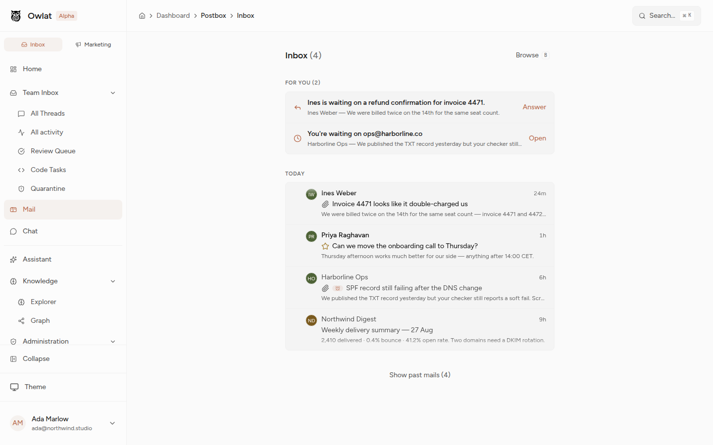
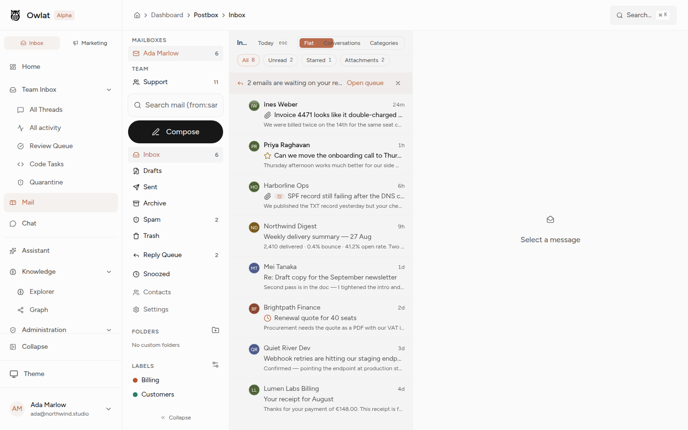
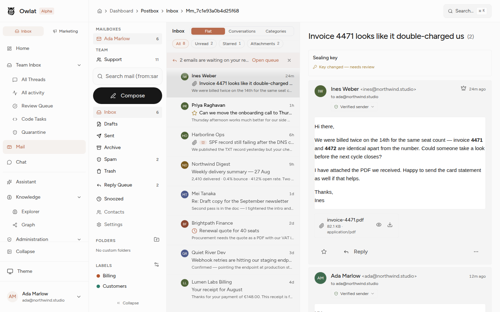
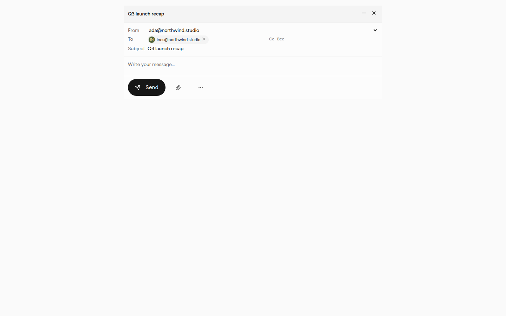
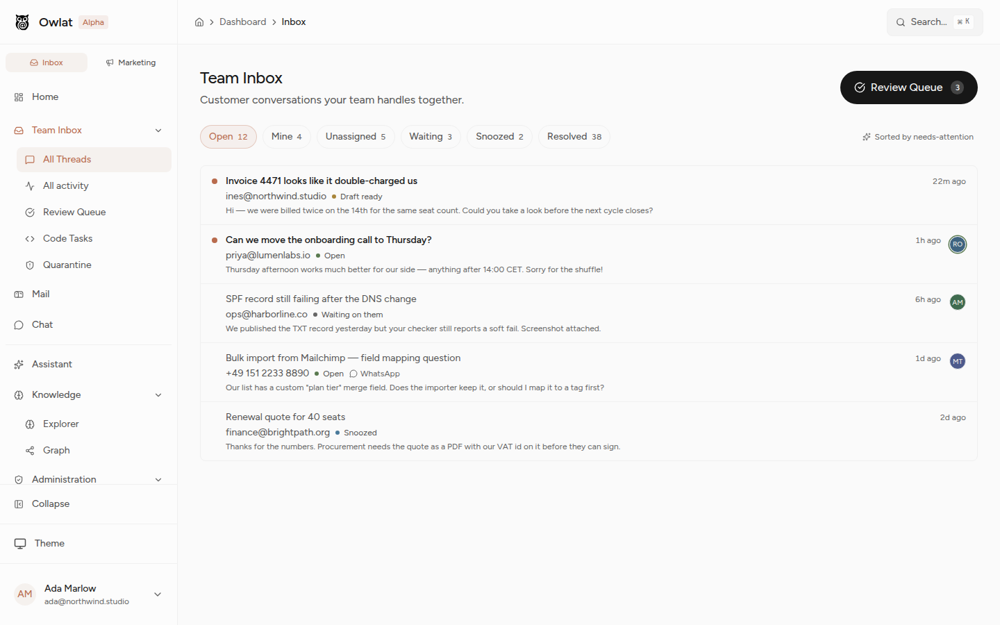
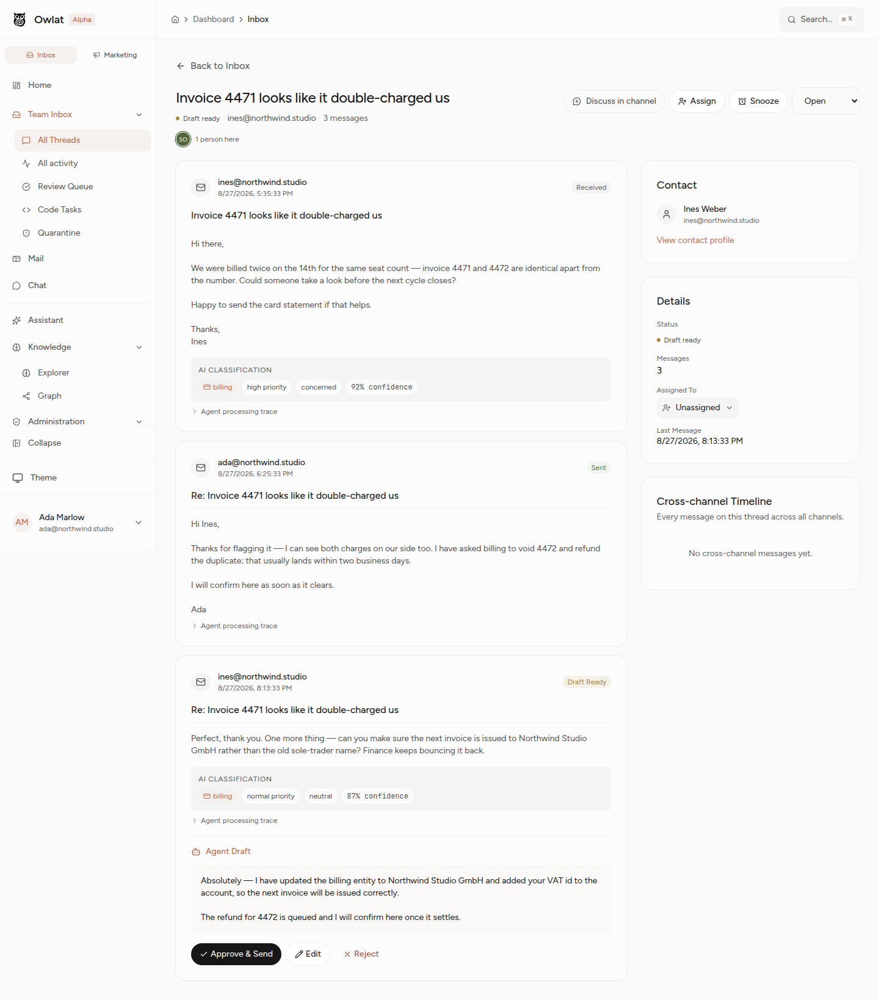
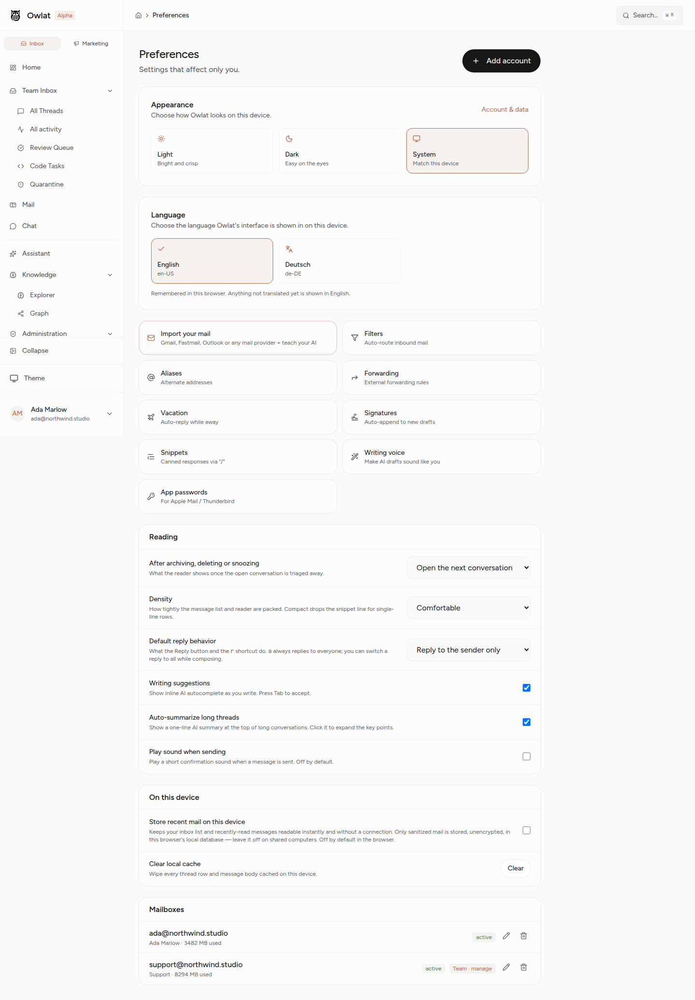
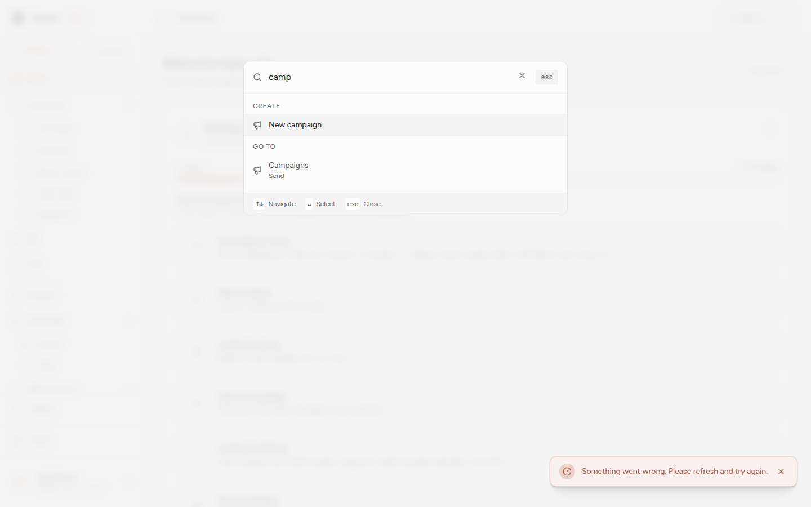
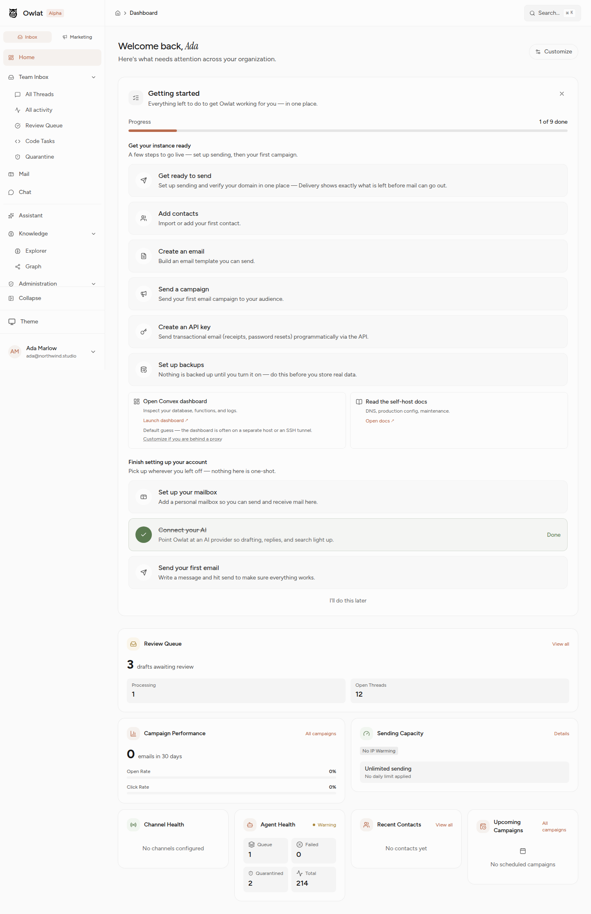
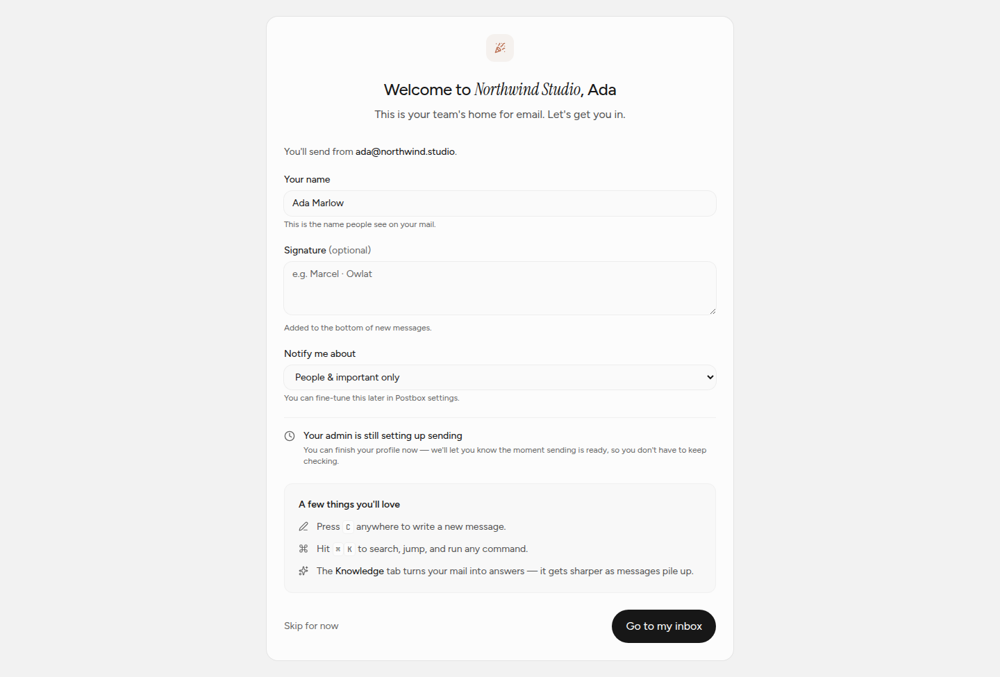
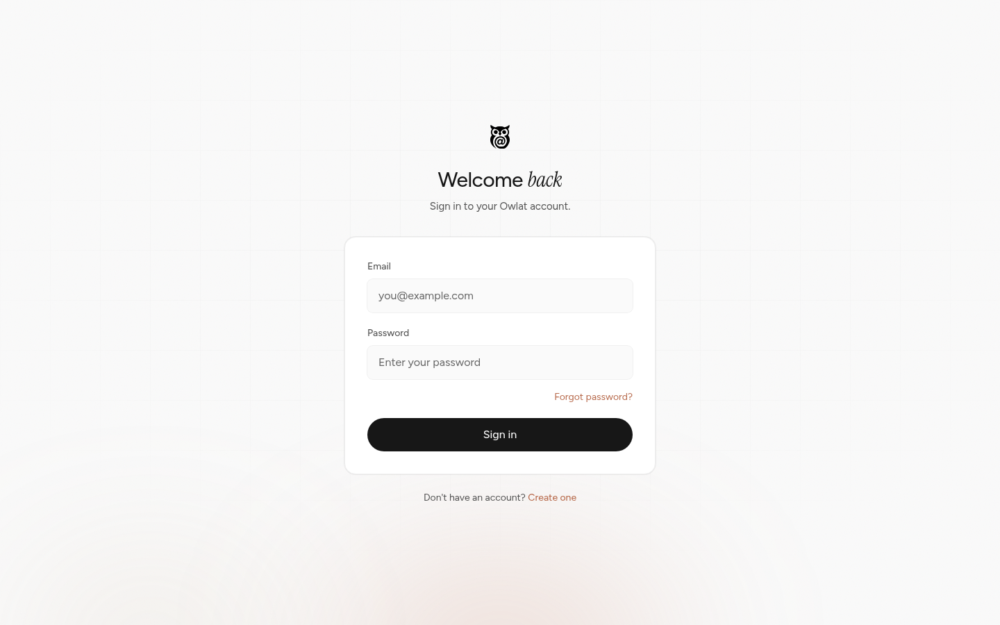
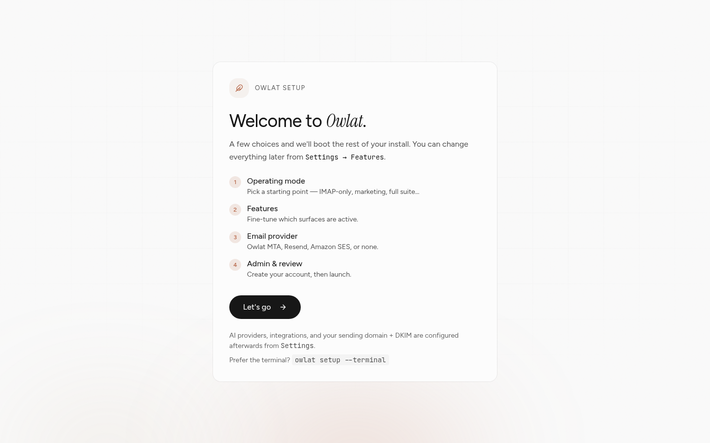
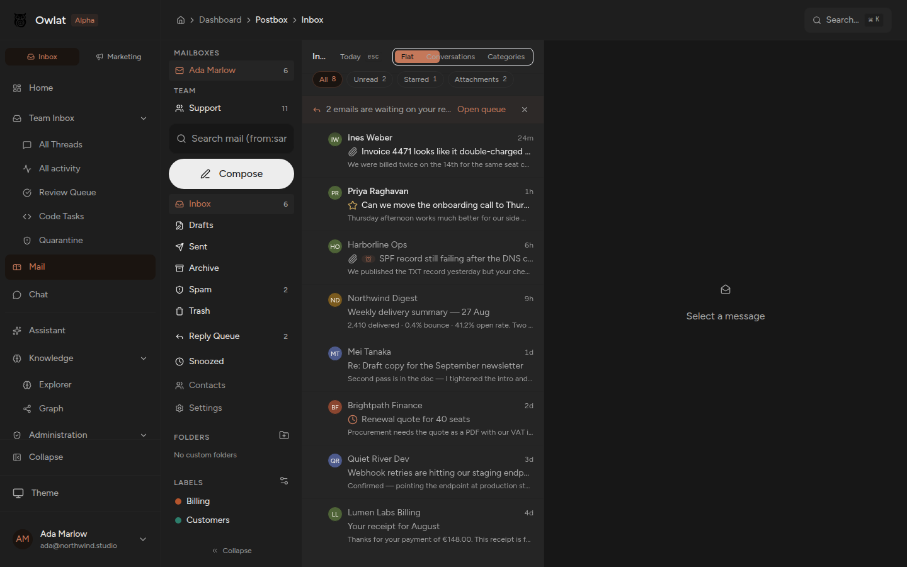
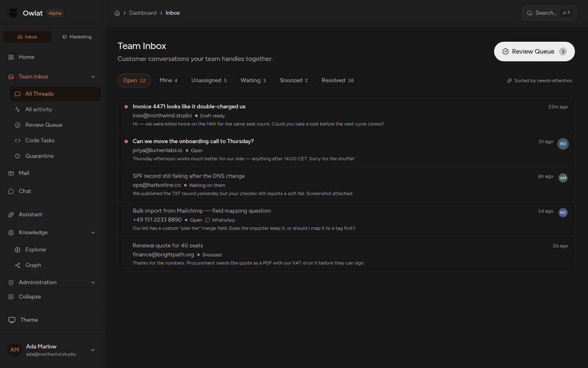
The richest vein in the whole review. The delivery backend (bounce classifier, alignment preflight, Google Postmaster ingestion, per-recipient lifecycle) is deep, but nearly all of it is wired to campaigns and admin screens. The person writing a normal email gets none of it. Most of Theme A is surfacing, not building.
Problem. mailMessages.outbound stores per-recipient state (queued / sent / bounced / failed), bounce message, error code and timestamps. No public query exposes it and no component renders it. A hard bounce looks identical to a delivered mail.
Proposal. Add a mailbox-scoped public query over the existing data and render a delivery strip on sent messages in the thread reader, with a "resend to the failed recipient only" action. No new backend state, no new writers.
Hi both, contract attached. Can you counter-sign by Friday?
contract-v4.pdf · 1.2 MBHi both, contract attached. Can you counter-sign by Friday?
contract-v4.pdf · 1.2 MBapps/api/convex/schema/mail.ts (the outbound object, ~L571-611)apps/api/convex/mail/postboxOutboundLifecycle.ts (sole writer; states already terminal-safe)postboxOutboundAudit.ts / outboundQueries.ts export only internal queries; a public mailbox-scoped read does not exist yetapps/web/app/components/postbox/PostboxThreadReader.vueProblem. The stored bounceMessage is a raw SMTP string ("550 5.7.1 Unauthenticated email ... DMARC policy"). It hides the one thing the user needs: whose fault it is and what to do.
Proposal. Reuse the MTA's bounce classifier to map every failure to a cause, a fault attribution (your setup / their mailbox / temporary) and one next action, as an i18n-keyed catalog following the existing senderAlignment.ts registry pattern. This is the copy inside idea 1's red row.
apps/mta/src/bounce/classifier.ts, outcome.ts, types.tsapps/web/app/utils/senderAlignment.ts, deliveryReadiness.tsProblem. The From picker already renders a DMARC-alignment chip, but the pre-send gate chain (seal, attachment, stale-reply) never consults it. A user with a broken identity sends straight into a certain rejection and learns from a bounce.
Proposal. Add an alignment gate to handleSend using the verdict already computed inches away on screen. Warn with the chip's existing plain-language reason and a link to the fix. Warn, don't hard-block, so self-hosters mid-setup are never trapped.
apps/web/app/components/postbox/PostboxComposerEnvelope.vue (computes senderAuthDisplay, L67-80)usePostboxStaleReplyGuard.ts / usePostboxComposerSealLock.ts (blockSend + onConfirm replay)Problem. marcel@gmial.com is syntactically valid and sends without a murmur. A misdirected email is unrecoverable and a real privacy exposure. The bounded-edit-distance algorithm already exists in the repo, built for the inbound mirror image of this problem.
Proposal. On chip commit, compare the domain against contact-frecency domains and common providers; suggest inline, never block. Ideas 4, 5 and 6 share one visual below.
apps/api/convex/mail/senderHeuristics.ts (boundedEditDistance, LOOKALIKE_MAX_EDITS)PostboxRecipientField.vue (addRecipient), pure helper home: apps/web/app/utils/recipientHints.tsProblem. External chips are flagged, but an address you have never written to looks identical to your closest colleague's. This is how autocomplete mis-picks land.
Proposal. contacts.senderState already knows isKnown. Mark never-emailed recipients with a "first time" chip and list only those addresses in a one-line dismissible confirm on send.
Problem. The only draft self-check is the AI coach, which is manual, flag-gated, and absent on self-hosted instances with AI off. Meanwhile the checks that need no model (empty subject, a leftover [TODO], an unfilled {{firstName}} variable, link text disagreeing with its href) cost nothing.
Proposal. One pure module mirroring attachmentMention.ts, rendered as a quiet footer chip, not a modal. Budget matters: chips for advisory checks, the existing replay-confirm dialog only for irreversible mistakes.
Problem. Autosave is server-only on a 1.5s debounce. A tab crash or typing while offline loses everything since the last upsert. The offline outbox covers sends, not keystrokes. Losing a long draft is the single most trust-destroying thing a mail client can do.
Proposal. Mirror composer state into the existing IndexedDB store on every change; on open, offer "Restore unsaved changes" when the local mirror is newer than the server row. Clear on confirmed save; never resurrect deliberately discarded drafts.
usePostboxCompose.ts (AUTOSAVE_DEBOUNCE_MS, flush), postboxOfflineStore.ts, race precedent in usePostboxOfflineOutbox.tsProblem. The backend already accepts undoSendDelayMs; the web client just never passes it, so everyone lives with the hardcoded 30 seconds. The plumbing exists end to end.
Proposal. A setting (Off / 10s / 30s / 60s) in PostboxSendingSettings.vue, threaded through send(). One setting plus one argument.
draftLifecycle/types.ts (DEFAULT_UNDO_SEND_DELAY_MS), drafts.ts L370 (validator arg exists), usePostboxCompose.ts L317/385 (accepts, never passed)Problem. The three presets compute in the sender's local time. Emailing Berlin from San Francisco, "tomorrow 9:00" lands at 18:00. A Friday-evening send rots over the weekend because there is no "next weekday" preset.
Proposal. Infer the recipient's timezone from prior message headers, offer "tomorrow 9:00 their time" labeled with both clocks, add "next weekday morning", and degrade silently when the timezone is unknown.
Problem. The attachment meter's own source says it nudges "toward a link for oversized files", and no link feature exists. Over-budget users hit a dead end, and large attachments are a top bounce cause.
Proposal. "Share as link instead" when the meter goes amber: store the file, insert an expiring access-scoped URL, add a revocation list in settings. Reuse the sealed-blob HTTP path for the authenticated variant. The largest single build in Theme A: needs a table, an expiry cron, and revocation UI.
postboxAttachmentMeter.ts (the comment promising this), packages/shared/src/attachments.ts (MAX_ATTACHMENT_BYTES), precedent apps/api/convex/mail/sealedBlobHttp.tsProblem. The seal lock renders one aggregate verdict. With five recipients and a recipient_no_key block, the sender can't tell who is preventing encryption, so the only move is sending everything in plaintext. The per-recipient discovery states are already computed and returned.
Proposal. A lock or no-key glyph on each chip; removing the blocking recipient restores a sealed send. Presentation only, and it must not weaken the deliberate no-silent-downgrade guarantee.
apps/api/convex/mail/sealPolicy.ts (per-recipient states), sealComposer.ts (deriveComposerLock), PostboxComposerSealLock.vue, PostboxRecipientField.vueProblem. Readiness panels, the deliverability dashboard and Postmaster data all live behind the admin hub. A regular user whose mail quietly lands in spam has no signal at all.
Proposal. A compact member-readable card in Postbox settings: is my domain verified, is my transport aligned, how many of my last 100 sends bounced, and the one thing to fix. ReadinessPanel documents that its queries are already member-readable, so the precedent exists.
components/delivery/ReadinessPanel.vue, utils/deliveryReadiness.ts, delivery/alignmentPreflight.ts, delivery/health.tsProblem. Snippets support exactly one variable ({{firstName}}). A complete variable system already exists in packages/email-builder/src/utils/variables.ts and is simply not reachable from Postbox.
Proposal. Typed variables (recipient, company, sender identity, date, custom prompts) resolved at insertion; unfilled ones caught by idea 6's preflight. Optionally expose the builder's saved blocks as full-mode templates.
Problem. The outbound builder derives a text/plain alternative the sender never sees, often mangled for block-built messages. Terminal and accessibility readers get whatever resolvePlainText produced.
Proposal. "Preview as sent" in the composer footer: rendered HTML, the real plain-text part, and a dark-mode rendering side by side. The builder's device-preview machinery already exists to borrow.
Problem. The hint is a single English regex (attach|enclosed). It fires on "attached to the project", misses German and French entirely in a localized app, and presents through a native window.confirm while every other dialog is themed.
Proposal. Localize per active locale, add negative-context patterns and "see the deck/PDF" phrasing, detect the forward case where a referenced attachment was removed, and replace the confirm with an inline undo-style bar. A guard that mis-fires trains users to dismiss all future warnings.
Problem. The simple editor is hand-rolled contenteditable on the deprecated execCommand API: bold, italic, underline, two heading levels, lists, quote, link, and nothing else. No tables, no color, no font size. The default "floating toolbar on selection" means the standalone composer shows no formatting affordance at all at rest (screenshot below). The escape hatch is the full designer, a much heavier mental model for a reply.
Proposal. Migrate the simple mode to a maintained editor model (ProseMirror/TipTap), keep the floating-bar aesthetic but show a discoverable "Aa" state, and extend the vocabulary (code block, table, color) without pushing anyone into the block designer.
Write your message... / snippets · : emoji
PostboxBasicEditor.vue + packages/ui/composables/useRichText.ts (execCommand core), PostboxEditorToolbar.vue, designer fallback via packages/email-builderPostbox already has snooze, a reply queue, smart categories, a screener and a daily brief. What's missing are the escape hatches and the layers between "one undifferentiated pile" and "out of sight, out of mind".
Problem. There is no way to silence a 40-person reply-all storm. Archive un-archives on the next reply; a filter rule is sender-scoped and lives in a different screen. Grep confirms zero mute foundation exists.
Proposal. mutedAt on mailThreads. Muted threads auto-archive new inbound, never toast, never enter the reply queue, and show a quiet chip with one-click unmute.
schema/mail.ts (mailThreads ~L688), new verb in mail/messageActions.ts, one branch in deliveryPipeline/insert.ts and lib/desktop/notificationRules.ts, exclusion in mail/needsReply.tsProblem. mail/snooze.ts snoozes a single message row. Snoozing a live conversation hides the newest message while the rest stays in the inbox. The mental model says "put this conversation away"; the behavior doesn't.
Proposal. snoozeThread/unsnoozeThread patch every inbox message on the thread; the wake sweep resurfaces the whole thread as one row. Default the h shortcut to thread scope with a "just this message" secondary.
Problem. A woken message reappears indistinguishable from new mail, so users re-read it from scratch. The Team Inbox already solved this (snoozeReturnedAt drives a returned marker); Postbox never got the port.
Proposal. Mirror the field, set it in the existing sweep, render a transient "Back from snooze, you asked for this at 9:00" chip. Clear on open. A straight port of a pattern already in the repo.
Problem. Image blocking is a local ref(false). A trusted newsletter demands the same click on every single issue, which trains people to hit "Load everything" reflexively and defeats the tracker protection.
Proposal. "Always for this sender" on the banner, persisted per mailbox + sender, revocable in settings. Tracker-pixel stripping stays on regardless.
PostboxMessageBody.vue (~L95-100, 355-395), packages/shared/src/postboxTrackers.ts, table shape to copy: mailSenderCategoryOverridesProblem. Grep for swipe/touchstart across the app returns nothing. On phones the only triage routes are hover buttons (need a pointer) and right-click menus (need a right-click). The mobile layout is otherwise real: off-canvas rail, list/reader swap, compose FAB. The rows just have no touch verbs.
Proposal. A pointer-event swipe layer on thread rows: left archives, right snoozes, configurable second actions, colored reveal track, undo toast via the existing usePostboxTriageUndo, threshold respecting reduced motion.
Problem. Notification control is one global select (Everything / People & important / Nothing) with no time dimension and no per-thread override, so the real choice is all-day noise or all-day silence. Separately, the desktop app never requests notification permission (.show() is called straight from Rust), so the first toast can silently vanish on macOS and Windows, and previews always include sender and subject, which is unfortunate on a shared screen.
Proposal. A quiet-hours window and weekday mask in mailUserSettings, evaluated in the pure rules module; suppressed toasts roll into one "12 while you were away" summary. A per-thread "notify me when they reply" that pierces quiet hours. A permission request with a test button in first-run, a denied-state banner linking the OS pane, and a "hide message preview" toggle.
schema/mail.ts (mailUserSettings L1285-1335), lib/desktop/notificationRules.ts (shouldNotify, pure and unit-tested), apps/desktop/src/notifications.ts, src-tauri/src/notifications.rsProblem. The category classifier already labels every thread (person / newsletter / notification / receipt), but in the flat inbox twelve newsletters still cost twelve rows and twelve decisions.
Proposal. Collapse consecutive non-person threads into an expandable bundle row per category, with bulk archive and unsubscribe on the bundle. Ship as a fourth view mode so nobody's list changes under them. Pure client-side grouping over an existing feed.
Problem. mailFilters is a full condition/action engine, but its only reading effect is moving mail to another folder, which hides it. There is nothing between one pile and out-of-sight.
Proposal. A pinToSection filter action naming a user-defined inbox section; render ordered, collapsible sections with unread counts. This is the Superhuman/Shortwave split inbox, and the rule engine is already built.
Problem. The reader fires markThreadRead the moment a thread renders. Arrow-keying past a row destroys the unread signal, and the unread flag is the base every other triage feature and the dock badge depend on.
Proposal. markReadPolicy: immediate | after-dwell | manual in mailUserSettings. Default to a ~2s visible dwell that cancels on navigate-away. Sits beside prefs that already exist.
Problem. The RFC 8058 one-click machinery exists per message; hygiene across a hundred senders is a hundred chores, so nobody does it.
Proposal. Group senders carrying unsubscribe data with volume and last-opened columns, multi-select, one "unsubscribe and archive all" action with a legible partial-failure summary.
Problem. The rule engine is powerful and entirely manual. The system watches someone archive-on-sight from the same sender forty times and says nothing. The Team Inbox already has the suggestion pattern (autonomySuggestions); Postbox has no equivalent.
Proposal. A bounded per-sender triage tally; when one verb dominates over N occurrences, a dismissible "You archive everything from noreply@x. Always archive it?" prompt that one-click creates the filter, with undo and a link to the rule it made. Strictly opt-in per suggestion, never auto-applied.
Problem. One hardcoded geometry: a fixed 384px list left, reader right. On a wide monitor the reader is a line-length problem; on a laptop the list truncates every subject. No resize handle.
Proposal. readingPane: right | bottom | off plus a persisted list width with a drag handle (keyboard-accessible fallback). The persistence pattern is exactly what density and viewMode already do.
Problem. The brief is built by a cron and rendered only at the top of Today. The schema comment says email delivery is "a separate opt-in" that doesn't exist. A brief you only see after opening the app can't do a brief's job.
Proposal. Opt-in delivery to the user's own mailbox (or a desktop push summary) at a chosen local time, deep links per item, and an anti-loop guard so a self-delivered brief never re-enters the brief.
Problem. Sorts are needs-attention or newest; "newest" actively buries the oldest neglected thread, and nothing anywhere shows waiting time. That's the one metric a shared inbox exists to manage.
Proposal. Derive waiting time from lastMessageAt when the newest message is inbound; an aging chip that escalates at thresholds, an "oldest waiting" sort (the index already supports it), and a "waiting > 24h" pill.
Problem. Mail to a shared address that is also visible personally exists twice with no link. A user can reply from Postbox while a teammate drafts in the Team Inbox; neither side knows.
Proposal. A read-only correlation on rfc822MessageId surfaced as an "Also in Team Inbox, assigned to Ana, draft pending" strip in each reader. No data merge. The authorization design across the personal/org boundary is the real work.
The query grammar is genuinely good (from:, is:, has:, dates, quoted phrases, removable chips) and almost none of it is discoverable, durable, or deep enough.
Problem. snippet (the first 200 chars) is the only indexed body field. Anything deeper is unfindable, silently. This interacts with sealing: bodies are sealed at rest and the snippet is the documented plaintext carve-out, so widening it needs an ADR and an admin opt-out for instances that prefer sealing over searchability. Idea 49's offline search is the no-tradeoff alternative for cached mail.
Proposal. A dedicated searchBody field (4-16KB normalized excerpt) populated at delivery, with the security review, migration backfill and opt-out done properly.
deliveryPipeline/insert.ts (buildSnippet, L25), schema/mail.ts (search index L682, at-rest exception comment L675-681), lib/atRestBodies.tsProblem. No persisted query exists anywhere in the schema. Every recurring question ("unread from my boss", "invoices with attachments") gets retyped daily.
Proposal. A mailSavedSearches table, a "save this search" affordance, pinned entries in the folder rail with counts, and URLs so they're bookmarkable. The parser, the query and the rail sections all exist; this is one CRUD table.
Problem. The search bar is a 53-line plain input. Nothing suggests is:unread exists; chips can only remove a filter, never add one; and there's no debounce, so every keystroke re-subscribes a Convex query (the debounce composable exists, unused by Postbox).
Proposal. A dropdown offering operator completions as you type, values resolved from the address book and labels, and recent postbox queries via the same localStorage pattern the palette ships.
Problem. Filters support cc, body, header, size, regex and negation. Search supports none of those, no OR, no - negation. Users learn one grammar in Filters and find it missing in Search.
Proposal. Add cc:, bcc:, filename: (needs idea 37), larger:/smaller:, leading-minus negation and single-level OR to the parser and the post-filter chain.
Problem. Search takes one required mailboxId, so personal plus team means two searches. And globalSearch.ts fans out over contacts, templates and campaigns but not mail, so the palette cannot find an email.
Proposal. Accept an array of readable mailboxes, merge by receivedAt, and add a mail provider to the palette. "⌘K, type a name, hit the email" is the flagship interaction of every modern client, and the palette infrastructure is already there.
Problem. "Where's that contract PDF?" is a top-three mail task and is unserved: filenames live inside an unindexable array on the message, so filename: is impossible and there is no browsing at all.
Proposal. A mailAttachments junction table written at delivery (with a backfill), a Files view with type/sender/date facets opening the existing Quick Look lightbox, and mail attachments ingested into the semantic file store so the assistant can answer questions about an emailed PDF.
Problem. Folders have parentId and counts; labels are a flat, unordered, uncounted wall. Thirty labels render alphabetically with no signal which have new mail.
Proposal. parentId, order and isPinned on mailLabels, a collapsible tree with counts, Work/Clients/Acme nesting on create, mirroring folders.
Problem. Conditions are AND-only; priority exists in the schema with no reordering UI even though stopProcessing makes order matter; you can't preview what a rule would match; and a new rule never cleans up the backlog that motivated it.
Proposal. Four separable pieces: a match-any toggle, drag-to-reorder writing priority, a preview panel running the compiled predicate over recent mail, a batched "run on existing mail", plus "create filter from this message" in the reader overflow.
Problem. Everything is hardcoded newest-first. "Oldest first" is the standard way to clear a backlog; "largest first" is how you reclaim quota. Neither is reachable.
Proposal. A header dropdown persisted in settings. Date direction is just flipping .order() on the existing index (S); size needs a new index (M).
For the keyboard-first audience this product clearly targets, depth of the existing systems matters more than new ones: one-slot undo, selection without ranges, five disconnected shortcut systems.
Problem. Three defects in one layer: no shift-click or Shift+J/K range select (selectMany exists with zero call sites), no select-all or "select all N matching", and bulk label/snooze run N sequential round-trips in a for loop, bailing on first failure. Labelling 200 messages fires 200 mutations.
Proposal. A selection anchor (the review queue already has range-extend to copy), a header tri-state checkbox with "select all N", and setOnMessages-style batch mutations.
Problem. Palette filtering is plain substring, so "pbx settings" matches nothing, and PaletteItem.run takes no arguments, so "Label as..." would need one item per label.
Proposal. Subsequence fuzzy scoring with matched-character highlighting, mode prefixes (> commands, @ people, # labels), and a two-step argument flow. The filter functions are pure and unit-tested, so the scoring swap is contained.
Problem. Five shortcut systems, no shared registry. Live bug: on Postbox routes, ? is caught by both a document listener and a window listener, so two help overlays open at once. The global cheat sheet is hardcoded and already wrong (it says g s goes to Settings; the code routes it to Admin), and it lists none of the Postbox keys. Nothing is remappable.
Proposal. Ship the ? collision fix immediately. Then one scoped registry with conflict detection, both cheat sheets generated from it, and user remapping with Gmail/Superhuman/Outlook presets.
useKeyboardShortcuts.ts L66 vs PostboxShortcutHelp.vue L16. Drift: KeyboardShortcutsHelp.vue L15-48 hardcoded, getRegisteredShortcuts() has zero callers. Remap seam: postboxShortcuts.tsProblem. Undo exists in three places, each holding exactly one entry; a second action makes the first unreachable. One-deep undo quietly discourages the fast keyboard triage the product is built for.
Proposal. Generalize usePostboxTriageUndo into a bounded LIFO stack (10 entries) with repeated ⌘Z, registered app-wide so any screen can push an inverse.
Problem. The backend knows a lot per sender (VIP, screener state, frecency, auth verdicts) and there is no single place to see everything from one person. Clicking a sender does nothing.
Proposal. A slide-over from the sender line: recent threads, shared attachments, VIP and screener toggles, auth history, and "search all mail from this sender" wired to from:.
Problem. Both are fire-and-forget with no local state change, so the star icon waits for a Convex round-trip while archive and snooze are instant. The two highest-frequency actions are the only laggy ones.
Proposal. An optimistic flag-override map beside the existing hidden-ids set, pruned when the subscription confirms. usePostboxOptimisticHide is the exact pattern, roughly 40 lines. The best perceived-speed-per-line change available.
Problem. The read-ahead system (150ms debounce, LRU-6, concurrency-capped) triggers only on keyboard focus. Mouse users, the larger half, pay a full round-trip on every click.
Proposal. Fire the same debounced prefetch on row mouseenter and focusin. One event handler; the composable needs no change.
Problem. The flat list windows above 100 rows; Groups and Categories use bare v-for. Category view is exactly where a heavy inbox lands, so the mode most likely to hold thousands of rows is the one without windowing.
Proposal. Extend usePostboxVirtualList with section-aware offsets, adopt in both components, add auto-load near bottom, and throttle onListScroll to animation frames.
Problem. The biggest architectural mismatch found: a 493-line IndexedDB store, offline outbox, cached bodies and offline banners, behind a manifest that promises installability, and no service worker anywhere. A cold offline load is a blank window.
Proposal. Precached app shell with navigation fallback so a cold start renders from the existing cache; raise the 200-row/50-body caps; then offline search over cached bodies, which delivers full-body search locally with no server-side sealing tradeoff (see idea 32). Needs care with the CSP branches, the desktop build and the updater.
Problem. Migration only handles a live IMAP/Google connection. A Takeout archive, a Thunderbird .mbox or a folder of .eml files has no path in, and a Gmail migration silently drops the user's labels and filters, usually the thing they most want preserved. There is also no bulk export, which undercuts the data-ownership pitch of a self-hosted client.
Proposal. Upload-based import reusing the existing parse-and-insert pipeline, Gmail labels mapped to mailLabels and filters to mailFilters, and a "download all my mail" mbox export.
The derivations here are excellent, pure, and honesty-audited. They just don't reach the moments where users decide: the list, the reply, the quarantine release, the account itself.
Problem. The five-state auth verdict, including misaligned (the classic impersonation shape), renders only inside an opened thread. Triage is where phishing gets clicked, and the list shows nothing.
Proposal. A compact danger-only marker on rows for failed, misaligned and the lookalike-domain heuristic. Silent for verified and unauthenticated, so the list doesn't become a wall of shields.
utils/senderAuth.ts (deriveSenderAuth, pure, done), fields persisted in schema/mail.ts ~L523-560, row chip slots exist (PostboxTeamReplyBadge precedent)Problem. There is no "show original" anywhere. Raw headers are persisted for audit and no query exposes them. The auth badge makes claims the user cannot check, which is at odds with the app's honesty-first design.
Proposal. A disclosure in the reader header: From/Return-Path/Reply-To, each auth verdict with the exact domain it authenticated, the ARC sealer when a rescue applied, and "download original". Makes the badge falsifiable.
Problem. Quarantine shows a raw injectionType enum and a bare confidence percentage, to a non-expert making a security decision. The repo already solved this exact problem once: TrustChip replaced numbers with "Ready to send / Worth a look / Needs you".
Proposal. Outcome-first line ("We held this back because it looks like it's pretending to be your bank"), reasons as bullets, enum and confidence demoted to a footer.
Problem. Trust-on-first-use is done well (pinning, key-change banner, refusal to seal to unaccepted keys), but there is no out-of-band verification: no QR, no compare-in-person, no verified state. A pinned key is only as good as the first discovery.
Proposal. A "verify this contact" step: grouped fingerprint, QR code, read-aloud numeric form, a verified flag on recipientKeys, and distinct display in the seal lock. The feature encrypted-mail users ask for by name.
Problem. A real, well-documented private-key backup exists, reachable only from an admin page. The person whose mail is sealed cannot see the loss risk or act on it.
Proposal. A member-visible "your mail is sealed" card in preferences with a recovery-kit download behind a password re-prompt, plus a one-time nudge in first-run when sealed mail is on. The re-auth gate is the security-sensitive part.
Problem. The guard only fires on failed. It ignores misaligned (the impersonation state), Reply-To mismatch (the reply goes somewhere other than the displayed sender) and lookalike domains, which together are how business email compromise actually lands.
Proposal. Fire on those three too, and show the actual destination address in the interstitial rather than a generic warning. Keep the per-thread consent memory. The guard, the store and the derivations all exist.
Problem. The BetterAuth schema defines session (with IP and user agent), twoFactor and passkey tables. None are wired; the account page offers only a password change. Email is the recovery root for everything else the user owns.
Proposal. A "sign-in and security" section: active sessions with revoke and sign-out-everywhere (needs no new plugin, ship first), passkeys, TOTP with backup codes.
The a11y and i18n machinery is unusually strong and test-enforced, which makes the remaining gaps sharp-edged: they sit precisely on the surfaces the tests don't cover.
Problem. Settings destinations are declared in four hand-maintained places, already drifted: aliases, vacation, snippets, writing-voice and app-passwords exist as pages but are missing from the nav table, so the palette can't find them. On an instance without mail they have no entry point at all. And search only ever finds destinations, never controls.
Proposal. A declarative registry of path, title key, section, keywords and gate, consumed by the hub, the breadcrumbs, and a palette provider that indexes individual controls ("dark mode", "auto-advance") and deep-links to the section.
Problem. No preferences layout exists. Thirteen pages hand-roll the same wrapper, two have already dropped the shared back link, and moving from Filters to Aliases means returning to the hub every time.
Proposal. layouts/preferences.vue with a left nav driven by idea 58's registry. Delete twelve hand-rolled wrappers and the drift class with them.
Problem. /desktop/settings is a 441-line page with its own chrome, reachable only from the native menu, and it duplicates the appearance and notification controls that also live in preferences. Platform detection is spelled three ways, twice with the deprecated navigator.platform.
Proposal. Fold it into the preferences layout as a self-hiding "this device" section (the pattern PostboxOfflineSettings already uses), keep the old route as a redirect, collapse detection onto useDesktopContext.
Problem. Light-mode --color-warning: #a8853a is about 3.45:1 on white, a WCAG AA failure, and it is the text color of exactly the security states that most need reading (TrustChip's "Worth a look" at 10px uppercase, the security badge's warn tone, the key-change banner). Nothing catches it: the axe harness disables color-contrast because happy-dom has no CSS engine.
Proposal. Darken the text token to ~4.6:1, keep a lighter fill token, and add a unit test that parses light.css/dark.css and asserts a contrast floor for every text/background pairing (precedent: deadTokens.lint.test.ts).
#a8853a on white = 3.45:1 fails AA#8a6a25 on white ≈ 4.6:1 passes AAProblem. Five well-built axe suites cover public pages, auth, the shell, setup and overlays. Postbox, the biggest screen in the product, has none, and it shows: the compose field renders role="textbox" with no accessible name at all, and the search bar has neither label nor role. A screen-reader user cannot identify the composer.
Proposal. postboxA11y.test.ts over layout, list, reader and composer; a preferences suite over all 13 pages; fix the two labels while adding them.
Problem. Twenty-two ad-hoc live regions cluster in admin screens because those authors happened to remember; preferences has zero, so flipping "auto-advance" produces silence for a screen-reader user. No route-change announcement exists, and <main tabindex="-1"> is never focused on navigation, so keyboard users re-tab from the top of the sidebar on every page change.
Proposal. One useAnnounce() with a polite region in the dashboard layout, called from useBackendOperation so every save announces by default, plus a route-change announcement and focus move to main.
Problem. The CSS backstop is good, but of 144 animate-spin usages exactly one carries motion-reduce:animate-none, zero of 29 animate-pulse do, and three files hand-roll their own matchMedia check. Spinners are the most common motion in the app and the kind that triggers vestibular symptoms.
Proposal. One useReducedMotion() composable, gate the JS-driven tickers on it, and a source lint asserting every spin/pulse utility carries the motion-reduce variant.
Problem. Language lives only in a browser cookie, and the server-side text helper imports en.json directly. A German user gets English password resets, deletion notices and invites. That's the difference between a translated UI and a translated product.
Proposal. An optional locale on the user record written when the picker changes (cookie stays as the fast path), threaded through the transactional templates.
Problem. formatters.ts defaults to en-US and 63 of 72 call sites pass no locale, so German pages show "Mar 3, 2024". formatRelativeTime builds English by hand with manual pluralization, and "Never" / "Invalid date" are hardcoded literals bypassing i18n. Meanwhile ~40 other components do it correctly, and locale key parity is test-perfect at 9,295/9,295, which makes this the actual localization defect.
Proposal. Replace the module with a useFormat() composable reading the active locale, use Intl.RelativeTimeFormat, move the literals into the catalog, add datetimeFormats to the i18n config. Mechanical across the 63 call sites.
Problem. The JSON export is technically impressive (OPFS streaming, paged reads) and its UX is a button and a spinner: no manifest of what's included, no progress, and retention horizons are hardcoded server-side with nothing surfaced to the user.
Proposal. A pre-run manifest with row counts, a real progress bar, and a "your data" card stating retention plainly with a per-mailbox Trash auto-purge setting. The mbox export itself is idea 50.
Problem. Small, visible, and cheap. Each of these was observed either in the rendered capture or directly in code.
The view-mode control truncates at 1440px, a common laptop-external-monitor width, and the sliding highlight overlaps the next label (both themes):
The breadcrumb prints a raw document id, capitalized, as if it were a page title:
window.confirm while every other dialog is themed (also idea 15).handleAttachmentDownload catch block).console.error and hope the operation layer toasted.aria-pressed/role; selection is border color alone. The language picker one card down does it correctly. Copy it.hidden group-hover:, pointer-biased; keep them visible at the reader's default density.imprint.* keys sit untranslated in en.json; the UI package has an "actually translated" test, the app catalog doesn't. Port the assertion.| Idea | What | Why first |
|---|---|---|
| 46 | Optimistic star and mark-read | ~40 lines, the largest perceived-speed gain available |
| 47 | Hover prefetch | One event handler on an already-built system |
| 43a | Fix the double-opening "?" overlay | Live, visible bug |
| 3 | Alignment warning before a doomed send | The verdict is already on screen; copy an existing guard |
| 56 | Widen the reply guard | S effort, covers the BEC shapes the guard misses |
| 61 | Warning-contrast token + test | A WCAG failure on the security chips |
| 8 | Undo-send window setting | Backend already accepts the parameter |
| 68 | Paper cuts (pick any) | Each is S and user-visible |
1 + 2 (bounce surfacing, the single most important fix in this plan) · 4, 5, 6 (composer confidence layer) · 15 (attachment guard) · 17 (mute) · 18 (thread snooze) · 19 (snooze-return chip) · 25 (mark-read policy) · 30 (team waiting age) · 33 (saved searches) · 40 (date sort) · 51 (trust in the list) · 53 (quarantine language) · 62 (Postbox a11y suite) · 66 (formatters).
7 (draft mirror) · 9 (timezone scheduling) · 11 (per-recipient seal) · 12 (sending-health card) · 20 (per-sender images) · 21 (swipe) · 22 (quiet hours + permission) · 23 (bundling) · 26 (bulk unsubscribe) · 28 (reading panes) · 34, 35, 36 (search completion) · 41 (bulk selection) · 42 (fuzzy palette) · 44 (undo stack) · 45 (sender profile) · 48 (virtualize grouped) · 52 (message details) · 55 (recovery kit) · 57 (sessions first, then passkeys/2FA) · 58, 59 (settings registry + layout) · 63, 64, 65 (announcer, reduced motion, account locale).
10 (share links) · 13 (templates) · 14 (send preview) · 16 (editor migration) · 24 (split inbox) · 27 (rule suggestions) · 29 (brief digest) · 31 (cross-product linking) · 32 (body-search ceiling, with 49's offline search as the lower-risk sibling) · 37 (attachment index) · 38 (nested labels) · 39 (filter builder) · 43b (shortcut registry + remapping) · 49 (service worker) · 50 (import/export) · 54 (safety numbers) · 60 (desktop settings merge) · 67 (data control).
useI18n() with keys in apps/web/i18n/locales/; both locales, parity is test-enforced.mailUserSettings with a validator in lib/convexValidators.ts, read through usePostboxSettings.ts, following the "absent = today's behavior" convention.blockSend(opts) + onConfirm replay contract; watch the warning budget, chips for advisory, dialogs only for irreversible.utils/postbox*.ts / lib/desktop/*.ts so it tests without mounting Convex components.apps/api/convex/CONVENTIONS.md before new backend files; env access through lib/env.ts.{kind=link}
{kind=link}
{kind=link}
{kind=link}
{kind=link}
{kind=link}
{kind=link}
{kind=link}
{kind=link}
{kind=link}
{kind=link}
{kind=link}
{kind=link}
{kind=link}